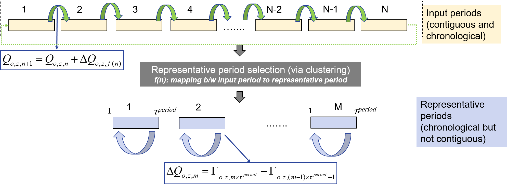

Reservoir Hydro
GenX.hydro_inter_period_linkage! — Methodhydro_inter_period_linkage!(EP::Model, inputs::Dict)This function creates variables and constraints enabling modeling of long duration storage resources when modeling representative time periods.
Storage inventory balance at beginning of each representative period The constraints in this section are used to approximate the behavior of long-duration energy storage technologies when approximating annual grid operations by modeling operations over representative periods. Previously, the state of charge balance for storage (as defined in storage_all()) assumed that state of charge at the beginning and end of each representative period has to be the same. In other words, the amount of energy built up or consumed by storage technology $o$ in zone $z$ over the representative period $m$, $\Delta Q_{o,z,m} = 0$. This assumption implicitly excludes the possibility of transferring energy from one representative period to the other which could be cost-optimal when the capital cost of energy storage capacity is relatively small. To model long-duration energy storage using representative periods, we replace the state of charge equation, such that the first term on the right hand side accounts for change in storage inventory associated with representative period $m$ ($\Delta Q_{o,z,m}$), which could be positive (net accumulation) or negative (net reduction).
\[\begin{aligned} & \Gamma_{o,z,(m-1)\times \tau^{period}+1 } =\left(1-\eta_{o,z}^{loss}\right)\times \left(\Gamma_{o,z,m\times \tau^{period}} -\Delta Q_{o,z,m}\right) - \\ & \frac{1}{\eta_{o,z}^{discharge}}\Theta_{o,z,(m-1)\times \tau^{period}+1} + \eta_{o,z}^{charge}\Pi_{o,z,(m-1)\times \tau^{period}+1} \quad \forall o \in \mathcal{O}^{LDES}, z \in \mathcal{Z}, m \in \mathcal{M} \end{aligned}\]
By definition $\mathcal{T}^{start}=\{\left(m-1\right) \times \tau^{period}+1 | m \in \mathcal{M}\}$, which implies that this constraint is defined for all values of $t \in T^{start}$.
Storage inventory change input periods We need additional variables and constraints to approximate energy exchange between representative periods, while accounting for their chronological occurence in the original input time series data and the possibility that two representative periods may not be adjacent to each other (see Figure below). To implement this, we introduce a new variable $Q_{o,z, n}$ that models inventory of storage technology $o \in O$ in zone $z$ in each input period $n \in \mathcal{N}$. Additionally we define a function mapping, $f: n \rightarrow m$, that uniquely maps each input period $n$ to its corresponding representative period $m$. This mapping is available as an output of the process used to identify representative periods (E.g. k-means clustering Mallapragada et al., 2018).  Figure. Modeling inter-period energy exchange via long-duration storage when using representative period temporal resolution to approximate annual grid operations The following two equations define the storage inventory at the beginning of each input period $n+1$ as the sum of storage inventory at begining of previous input period $n$ plus change in storage inventory for that period. The latter is approximated by the change in storage inventory in the corresponding representative period, identified per the mapping $f(n)$. The second constraint relates the storage level of the last input period, $|N|$, with the storage level at the beginning of the first input period. Finally, if the input period is also a representative period, then a third constraint enforces that initial storage level estimated by the intra-period storage balance constraint should equal the initial storage level estimated from the inter-period storage balance constraints. Note that $|N|$ refers to the last modeled period.
\[\begin{aligned} & Q_{o,z,n+1} = Q_{o,z,n} + \Delta Q_{o,z,f(n)} \quad \forall o \in \mathcal{O}^{LDES}, z \in \mathcal{Z}, n \in \mathcal{N}\setminus\{|N|\} \end{aligned}\]
\[\begin{aligned} & Q_{o,z,1} = Q_{o,z,|N|} + \Delta Q_{o,z,f(|N|)} \quad \forall o \in \mathcal{O}^{LDES}, z \in \mathcal{Z}, n = |N| \end{aligned}\]
\[\begin{aligned} & Q_{o,z,n} =\Gamma_{o,z,f(n)\times \tau^{period}} - \Delta Q_{o,z,m} \quad \forall o \in \mathcal{O}^{LDES}, z \in \mathcal{Z}, n \in \mathcal{N}^{rep}, \end{aligned}\]
Finally, the next constraint enforces that the initial storage level for each input period $n$ must be less than the installed energy capacity limit. This constraint ensures that installed energy storage capacity is consistent with the state of charge during both the operational time periods $t$ during each sample period $m$ as well as at the start of each chronologically ordered input period $n$ in the full annual time series.
\[\begin{aligned} Q_{o,z,n} \leq \Delta^{total, energy}_{o,z} \quad \forall n \in \mathcal{N}, o \in \mathcal{O}^{LDES} \end{aligned}\]